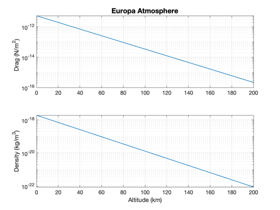
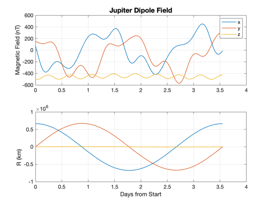

Europa atmospheric density and Jupiter magnetic field near Europa.
Things to explore:
1. Try different orbits around Jupiter. 2. Look at the magnetic field in orbit around Europa
------------------------------------------------------------------------- See also: AtmDens1, BDipoleJupiter -------------------------------------------------------------------------
Contents
%-------------------------------------------------------------------------- % Copyright (c) 2014 Princeton Satellite Systems, Inc. % All Rights Reserved. %-------------------------------------------------------------------------- % Since version 2014.1 %-------------------------------------------------------------------------- muJupiter = Constant('mu jupiter'); muEuropa = Constant('mu europa'); rEuropa = Constant('equatorial radius europa'); jD0 = Date2JD( [2034 8 2 0 0 0]); cD = 2.7;
Atmospheric density
%--------------------- h = linspace(0,200); rho = AtmDens1(h,'europa'); v = VOrbit(h+rEuropa,h+rEuropa,muEuropa)*1000; Plot2D(h,[0.5*cD*rho.*v.^2;rho],'Altitude (km)',{'Drag (N/m^2)','Density (kg/m^3)'},'Europa Atmosphere','ylog',[], [], [], [], 1)
Magnetic field of Jupiter at Europa's center
%---------------------------------------------- el = [671000 0.47*pi/180 0 0 0.0094 0]; [r,v,t] = RVFromKepler( el, [], muJupiter ); jD = jD0 + t/86400; b = BDipoleJupiter( r, jD ); Plot2D(jD-jD(1), [b*1.e9;r],'Days from Start',{'Magnetic Field (nT)' 'R (km)'},'Jupiter Dipole Field','lin',{'[1 2 3]' '[4 5 6]'},[], [], [], 1); legend('x','y','z') %-------------------------------------- % $Id: cabe5361192271506ab514055de6ff705ec9fc40 $